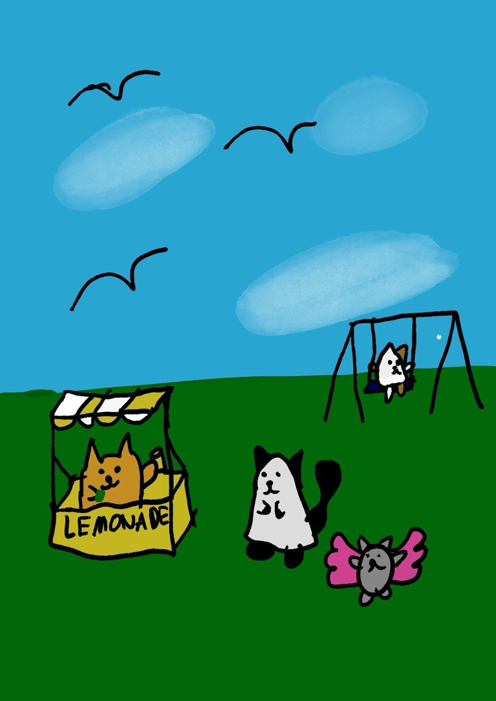
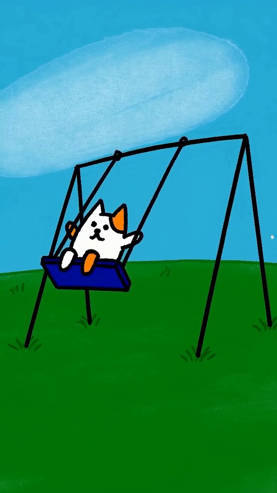
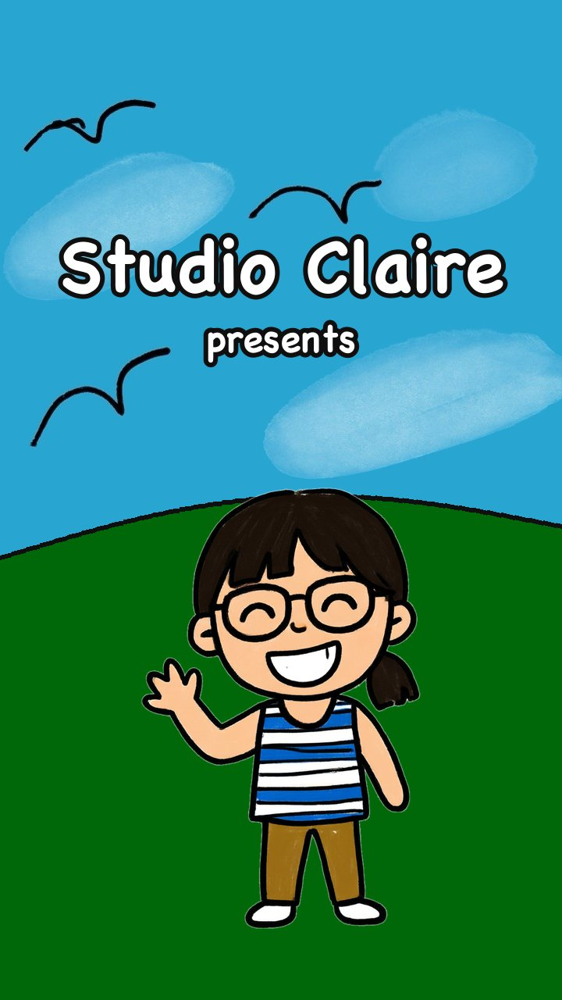

The story (mine)
A sunny park. An orange cat runs a lemonade stall. A ghost cat (white sheet, black ears, black tail) comes over and buys a drink. Meanwhile a cat on the swing goes higher, and higher, and then off into the sky. Luckily a little grey cat with pink wings is around. Everyone celebrates. Happy ending, obviously. I'm not a monster.
How I made it
I drew everything
Procreate on iPadOne picture with everything in it: the sky, clouds and birds, the LEMONADE stall, the ghost cat, the winged cat and the swing set. Flat bright colours, thick black outlines. Every shot of the film starts from this drawing.

I told the story, Fable planned the shots
Claude Fable 5.2I gave Fable my drawing and my story. It split it into three 8-second shots: the ghost cat gets a drink, the swing cat flies off, the winged cat saves it. It only used what I drew. The story and the ending are mine.
Wan 3 made it move
Wan 3Each shot was animated starting from the end of the one before, beginning with my drawing, in my style (thick wobbly outlines included). One take per shot, and we kept all three. The swing shot was the trickiest: Wan got excited and zoomed in for a bit.

I picked the music
Lyria 3.5I wanted lofi. So the soundtrack is gentle lofi hip-hop for a sweet cartoon: soft drums, warm piano chords, a bit of vinyl crackle. Cosy and happy. The sound effects came from Wan.
Stitching it together
titles · joins · endingThe three clips were joined on matching frames so it flows as one. At the start, my clouds drift and my birds flap, then a “Studio Claire presents” card where cartoon me waves from the hill. It ends with an old-school iris-out, because every proper cartoon does.

Credits
Claire: story, drawing, characters, music mood, director. Basically the whole film.
My helpers: Claude Fable 5.2 (shot planning), Wan 3 (animation and sound effects), Lyria 3.5 (music), Qwen Image (cartoon me for the title card), Claude Code (putting it all together).